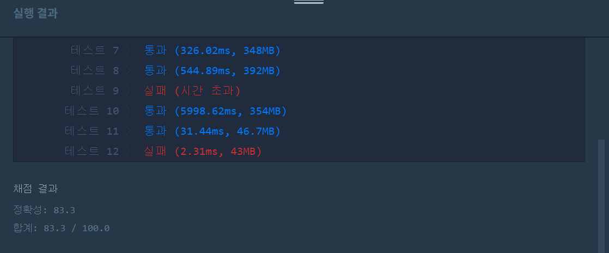
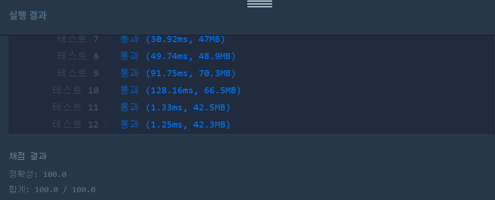

문제
https://programmers.co.kr/learn/courses/30/lessons/42883
테스트케이스 추가
| number(string) | k(int) | return |
|---|---|---|
| “10000” | 2 | “100” |
( ᐛ )و 첫 번째 도전
1. 설계
- number을 charAt()으로 하나씩 비교한다.
- 지금 값이 스택 탑보다 크면 팝하고 k–한다(지금값<=스택값 될때까지).
- k>0까지만 팝할 수 있다.
- k가 끝났으면 나머지 number을 스택에 푸시한다.
- 숫자가 끝났는데도 k>0이라면 스택에서 갯수만큼 팝한다(뒤에서 삭제).
- 스택을 팝하면서 앞에서 추가한다(스택은 LIFO이므로.)
2. 구현
import java.util.Stack;
/**
*
* @author HEESOO
*
*/
class Solution {
public String solution(String number, int k) {
String answer = "";
Stack<Character> st=new Stack<>();
char num, stNum;
for(int i=0;i<number.length();i++){//number순회
num=number.charAt(i);//하나씩 추출
while(!st.isEmpty()&&k>0){
stNum=st.peek();
if(stNum<num){//스택팝보다 큰 수를 넣어야함
st.pop();
k--;
}
else{
break;
}
}
st.push(num);//스택이 정리되었으므로 푸시
}
while(k>0){//숫자가 끝났는데도 k가 남았다면 그만큼 팝
st.pop();
}
while(!st.isEmpty()){//최종 값 생성
answer=st.pop()+answer;
}
return answer;
}
}
3. 결과
 실패.
4. 문제점
시간초과는 StringBuilder를 이용하고, 실패한 테스트는 위 테스트케이스를 만족하도록 코드를 수정한다.
( ᐛ )و 두 번째 도전
1. 설계
- while(k>0)에서 스택에 값이 있을 때 팝할 수 있도록 조건을 추가한다.
- 문자열 연결을 StringBuilder을 사용하여 시간을 줄인다.
2. 구현
import java.util.Stack;
/**
*
* @author HEESOO
*
*/
class Solution {
public String solution(String number, int k) {
String answer = "";
Stack<Character> st=new Stack<>();
StringBuilder sb=new StringBuilder();
char num, stNum;
for(int i=0;i<number.length();i++){//number순회
num=number.charAt(i);//하나씩 추출
while(!st.isEmpty()&&k>0){
stNum=st.peek();
if(stNum<num){//스택팝보다 큰 수를 넣어야함
st.pop();
k--;
}
else{
break;
}
}
st.push(num);//스택이 정리되었으므로 푸시
}
while(!st.isEmpty()&&k>0){//숫자가 끝났는데도 k가 남았다면 그만큼 팝
st.pop();
k--;
}
//최종 값 생성
while(!st.isEmpty()){
sb.append(st.pop());
}
sb.reverse();//sb에 역순으로 저장되었으므로 뒤집어줌
answer=sb.toString();
return answer;
}
}
3. 코드 설명
- Stack
st: number을 charAt()으로 하나씩 비교하여 저장한다. - StringBuilder sb: 문자열을 연결할 때 시간을 줄여준다.
- char num: number.charAt()로 추출한 값이다.
-
char stNum: 스택의 탑 값이다.
- 스택에는 탑보다 큰 수를 넣어야한다.
- 탑이 num보다 작을 경우에는 탑을 팝한다. 이때 스택이 비어있지 않고 뺄 수 있는 기회 k가 남아있어야한다. 팝한 후에는 k를 하나 줄여서 이를 센다.
- 스택의 정리가 끝났다면 현재 값 num을 푸시한다.
- number 순회가 끝났는데도 k가 남아있다면 그 갯수만큼 스택에서 뺀다. answer에는 최댓값이 들어가야하므로 스택의 탑을 팝하면 자릿수가 작은 일의자리부터 차례대로 빠진다.
- k도 계산이 끝났다면 StringBuilder을 이용해서 스택을 팝하여 문자열(최댓값 숫자)을 생성한다. 스택은 LIFO이므로 sb에는 거꾸로 문자가 이어진다.
- 따라서 sb.reverse()로 문자열을 한 번 뒤집고, 형변환을 거쳐 리턴한다.
4. 결과
 성공٩(˘◊˘)۶
해결 완료!
처음에는 number을 int형으로 배열에 저장한 후, 이전 문제에서 배웠던 perm()을 구현하여 k자리 조합을 모두 찾은 후 Math.max()을 이용해 문제를 풀까 했다. 그러지 않아서 다행이다. 아직까지도 문제를 보면 어떻게 효율적으로 풀 지 정리가 안된다T_T.